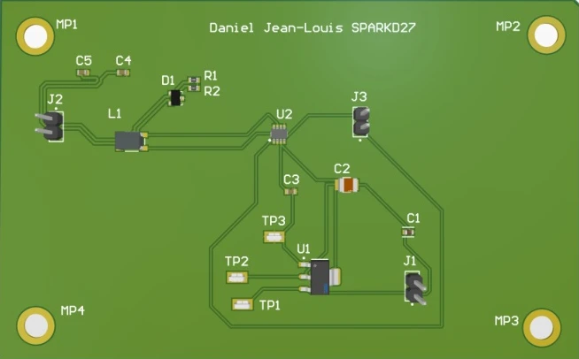
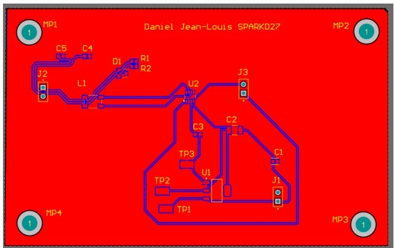

PCB design
CAN transceiver PCB
A club board design connecting a microcontroller to a differential CAN bus.

From parts list to schematic
Using the club’s assigned components, I drew separate Power, CAN, and Connectors sheets and linked them in a top-level schematic. A regulator steps the 5 V input down to 3.3 V for the transceiver. CAN_TX and CAN_RX connect to the microcontroller, while CAN_H and CAN_L run to the bus connector.
Layout and verification
I placed the components, routed the CAN differential pair, and added ground polygons. After resolving clearance and silkscreen issues, the final layout passed Altium’s design-rule check with zero violations. The deliverable was a CAD design and 3D review.
